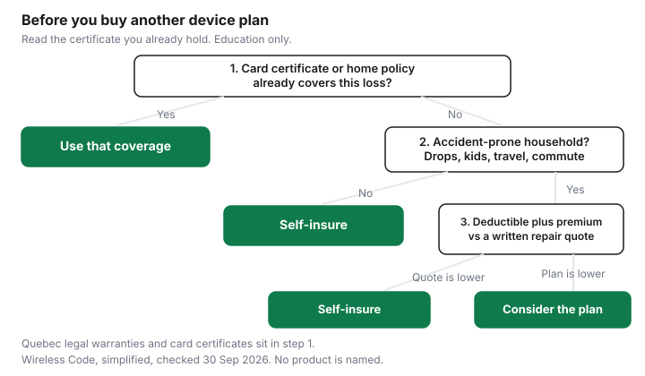

Technology · Canada
Protecting a New Phone or Laptop: Manufacturer Plans, Carrier Insurance and Credit Card Coverage
A new phone or laptop often gets a protection plan at the till, on top of a manufacturer warranty, a credit-card benefit, and sometimes a home or tenant policy. In Quebec, a legal warranty can already sit underneath all of that. Paying twice is easy when each document uses a different word for the same failure. This page is the device layer. Appliances, and the decision of whether a store plan is worth it on a washer or a fridge, stay on Are extended warranties worth it in Canada?. Nothing here ranks a card, a carrier, or a protection product.
Key takeaways
- Read the manufacturer warranty, the card certificate, and the home or tenant policy before you add a plan. The Wireless Code says a provider must tell you the manufacturer's warranty, and how long it lasts, before offering an extended warranty or insurance.
- A manufacturer plan and carrier insurance are separate contracts. Theft, loss, liquid damage, the deductible, and the claim limit live in each certificate. This page does not quote those prices.
- Card coverage is whatever that card's certificate of insurance says. Confirm the length, the cap, and the exclusions with the issuer. There is no national extra-year figure on this page.
- From 5 October 2026, a new cellphone, tablet, laptop, or desktop bought or leased from a Quebec merchant carries three years of automatic good-working-order coverage from delivery. A television carries four. The reasonable-durability warranty still applies.
- Use the flow at the bottom: coverage you already have, then how the phone actually gets used, then a written repair quote against the deductible plus the premium.
What the manufacturer warranty covers
A manufacturer warranty is the maker's promise about defects in the device, for the time and the failures written on the warranty card or the support page. It is not a promise about every drop, spill, or theft.
The length is not the same for every brand, and this page does not invent a national one-year rule for every laptop. Apple's battery and performance page, checked 29 Sep 2026, says the one-year warranty includes service coverage for a defective battery, in addition to rights under local consumer laws, and that Apple offers battery service for a charge once that warranty is over. That sentence is about iPhone batteries on that page. For any other phone or laptop, read the warranty that came with the unit.
Before a wireless provider offers you an extended warranty or insurance on a phone, the Wireless Code, simplified, checked 29 Sep 2026, requires the provider to inform you of the existence and the duration of the manufacturer's warranty. Ask for that duration in the conversation, and keep the sentence. If the pitch skips it, you do not yet have the comparison.
The claim kit is dull and it is the whole claim. Keep the receipt, the delivery or pickup date, the serial number, and a photo of the warranty card. A later buyer, a card issuer, and a Quebec merchant all ask which unit it is and when the clock started. The home-inventory guide is the same habit for a policy claim: serials and photos, stored where a fire or a theft does not take the only copy.
What to ask the maker before you pay for more coverage
Write four answers from the warranty page, not from the plan brochure. How long is the warranty from the delivery date? Which failures are defects, and which are called accidental damage? Who pays labour, parts, and shipping? Does an independent repair change anything, and where does the warranty say so? If the page is silent, the answer is not "covered." It is "check the manufacturer."
Manufacturer protection plans vs carrier insurance
A manufacturer protection plan and carrier device insurance are two products with two claim desks. One is usually tied to the device and the maker's repair network.
The other is usually tied to the wireless account and may end when you leave that provider. Neither one replaces the legal warranties below, and neither one is ranked here. The useful comparison is a column of questions you can put on one sheet.
On each certificate, mark yes or no for theft, loss, liquid damage, cracked glass, and a battery that simply wore out. Then write the deductible per claim, the number of claims allowed, the dollar cap, and whether a replacement is a new unit or a refurbished one. If the certificate does not state a deductible, do not assume it is zero. Check the certificate. Carrier pages and plan prices were not collected for this guide. Check the carrier.
A lost or stolen phone is also a service problem, separate from whether an insurer replaces the hardware. The Wireless Code, simplified, says that when you notify the provider, the provider must suspend the service at no charge. The contract can still bill you for charges incurred before that notice, and for the minimum monthly charge if you keep the contract, or the early cancellation fee if you cancel. Insurance that replaces a handset does not, by itself, erase that bill. Read both documents.
If the phone is in for repair under the manufacturer's warranty or the provider's warranty, the Code sets conditions for suspending wireless service charges: the device came with the contract, you returned it to the provider, it is under one of those warranties, you were not given a free replacement device, and cancelling would trigger an early cancellation fee. A manufacturer plan that sends you to the maker's depot may not meet that list. Ask the provider before you assume the line goes quiet.
Credit card extended warranty and purchase protection
Some credit cards include purchase protection, an extended warranty, or both. The extra time, the dollar cap, what you must charge to the card, and what is excluded are in that card's certificate of insurance.
This guide does not state a national number of extra months, and it does not state that phones are included or excluded. Read the certificate. Confirm it with the card issuer before you decline or buy a plan on the strength of the card.
Work the certificate like a form. Does the benefit extend the manufacturer's warranty, or is it a separate purchase-protection window for damage or theft soon after you buy? What is the maximum per item? Are refurbished units, gifts, or phones bought on a financing plan outside the benefit? Do you have to pay the full price on that card? The certificate answers those. A marketing line on a card's public page is not the certificate.
Credit card offer types are one way households compare cards. An offer type does not tell you that a particular card covers a particular phone. If you are choosing a card for other reasons, the certificate is still a separate read. No card is named or ordered on this page.
Home insurance
A home or tenant policy can cover a phone or a laptop as contents, under the perils the policy actually names, and often after a deductible. The deductible can be larger than a repair.
Some policies use a sub-limit for phones, jewellery, or electronics, and some let you schedule a device for a higher limit. Accidental damage, mysterious disappearance, and a crack from a drop are not the same peril as fire or theft. Check the wording. This page does not say that every Canadian policy excludes drops, and it does not say that every policy covers them.
Tenant insurance and a homeowners policy are different contracts. The comparison steps for a tenant policy are on tenant insurance in Canada. If you claim, the inventory is what the adjuster can use. Build it before you need it, using the home-inventory guide. A protection plan you already bought does not change the deductible on the policy. Put both numbers on the same line before you buy a third product.
Quebec's legal warranties
Quebec adds a legal warranty you do not buy. The Office de la protection du consommateur's page on the warranty of good working order, and the OPC release of 15 September 2026, both checked 29 Sep 2026, say it applies to new goods bought or leased from a merchant from 5 October 2026.
It is automatic and free. The clock runs from delivery. A cellphone, tablet, laptop, desktop computer, or video game console is three years. A television is four. If the good stops working properly during that time, you can ask the merchant or the manufacturer for a free repair. The merchant must show the duration near the price. The existing reasonable-durability warranty still applies during those years and after them.
That is the short version. Claim steps, exclusions for abusive use, and what happens on a resale are on Quebec's warranty of good working order. Use that guide rather than treating this paragraph as the whole law. The consumer page also says that if you are offered an extra warranty, the merchant must talk to you about the good-working-order warranty when it applies. Read that notice before you sign a plan in Quebec. Other provinces have their own legal warranties. Check your province. This page does not restate them as if they were Quebec's years.
Decision table
Lay the layers on one page. A cell that says "check the certificate" is unfinished homework, not a covered failure. Quebec rows apply to goods the OPC lists, bought or leased new from a merchant on or after 5 October 2026.
| Layer | Covers | Doesn't cover | Deductible or claim limits (check the certificate) |
|---|---|---|---|
| Manufacturer warranty | Defects the warranty card names, for the time it names. Apple's battery page describes one year of service for a defective iPhone battery, plus local consumer laws. | Whatever that card excludes. Do not assume drops, liquid, or theft are included. | Check the warranty. A charge for out-of-warranty battery service is the maker's price, not a figure on this page. |
| Provincial legal warranties, including Quebec | In Quebec, from 5 Oct 2026, a free repair if a listed new good stops working properly: 3 years for phones, tablets, laptops, desktops, and game consoles; 4 years for televisions. Counted from delivery. | The OPC excludes abusive use and ordinary maintenance. Goods bought before 5 Oct 2026 are outside this particular warranty. Other provinces: check your province. | The Quebec warranty is free. It is not a deductible plan. Reasonable durability can still be argued. See the Quebec guide. |
| Credit card extended warranty or purchase protection | Only what that card's certificate of insurance lists, and only if you met its conditions. | Whatever the certificate excludes, including any device type or payment condition it names. | Check the certificate for the cap, the time, and any deductible. No national figure is stated here. |
| Home or tenant insurance | Contents perils the policy names, after you meet the deductible and any sub-limit. | Perils the policy does not name. A crack from a drop may be outside a named-perils policy. Check the wording. | Check the deductible, any electronics sub-limit, and whether a scheduled item exists. |
| Manufacturer protection plan | The extra failures that plan's terms add, often through the maker's repair channel. | Exclusions in those terms. A worn battery may be outside both the basic warranty and the plan. Check both. | Check the deductible, claim count, and whether the replacement is new. |
| Carrier insurance | The failures that carrier's certificate lists, while the certificate says you are eligible. | Leaving the provider may end the coverage. The Code's lost-phone rules still bill the plan unless you cancel and pay any early cancellation fee. | Check the deductible and the claim limit. This page does not quote a carrier price. |
Example with made-up inputs. The next table is arithmetic, not a quote. A plan at $12 a month for 24 months costs $288. The made-up deductible is $100. The made-up repair is $280. If you never claim, self-insuring costs $0 and the plan costs $288. If you claim once, the plan path costs $388 and paying the repair yourself costs $280. On these inputs the plan costs more either way. Change the repair to $700 and one claim flips the comparison: $388 on the plan path against $700 if you pay the repair. The flow below is the order of questions. The dollars are only this illustration.
| What happens over 24 months | Plan path | Self-insure path |
|---|---|---|
| No claim | $12 × 24 = $288 | $0 |
| One repair that would have cost $280 | $288 + $100 deductible = $388 | $280 |
| One repair that would have cost $700 | $288 + $100 = $388 | $700 |

Stop at step 1 when a certificate you already hold covers the failure you are worried about. Move on when it does not. An accident-prone household, meaning drops, a commute, or a phone that lives with a child, is the reason to price a plan. It is not a reason to skip the quote. Ask a repair shop for a written number for the failure you actually fear, then add the plan's premium over the period you would keep it to the deductible. Consider the plan when that sum is lower than the quote and you could not replace the device without strain. Otherwise self-insure: keep the premium in the same account you would use for a repair. A second plan on top of a plan you did not read is how the same failure gets paid for twice.
Sources & date stamps
- CRTC, The Wireless Code, simplified, checked 29 Sep 2026: manufacturer warranty must be explained before an extended warranty or insurance is offered; lost or stolen device suspension at no charge, with contract charges continuing; repair suspension conditions; data overage cap of $50 and data roaming cap of $100 unless you consent to more.
- Apple, iPhone battery and performance, support.apple.com, checked 29 Sep 2026: one-year warranty includes service for a defective battery, plus local consumer laws; battery service for a charge outside warranty. No repair price is quoted here.
- OPC, warranty of good working order, quebec.ca/garantie-bon-fonctionnement, and OPC release 15 Sep 2026, both checked 29 Sep 2026: automatic and free from 5 Oct 2026 for listed new goods; 3 years for phones, tablets, computers, and game consoles; 4 years for televisions; from delivery; duration shown near the price; reasonable durability remains; merchant must mention the legal warranty when offering an extra one.
- Card, carrier, and home figures: check the certificate, the carrier, or the policy. No plan price on this page is from those documents.
Frequently asked questions
Do I need phone insurance in Canada?
You may already have coverage from the manufacturer warranty, a card certificate, a home or tenant policy, or, in Quebec, a legal warranty. Phone insurance is a separate contract with its own deductible and exclusions. Read those documents before you add a plan. This page does not tell you to buy or skip one.
Does my credit card extend my phone's warranty?
Some cards include an extended warranty or purchase protection. The extra time, the dollar cap, and the exclusions are in that card's certificate of insurance. There is no national extra-year figure on this page. Read the certificate and confirm it with the card issuer.
What does a manufacturer protection plan cover?
It covers the failures listed in that plan's terms, which may include accidental damage the basic warranty leaves out. It excludes whatever those terms exclude. The Wireless Code requires the provider to tell you the manufacturer's warranty length before offering the plan. Check the certificate for the deductible and the claim limit.
Does home insurance cover my phone?
It can, under the perils your policy names, usually after a deductible and sometimes under a sub-limit. Tenant policies and homeowners policies are different contracts. A drop is not automatically the same peril as theft or fire. Read the policy before you treat the phone as insured.
What warranty do I get automatically in Quebec?
From 5 October 2026, a new cellphone, tablet, laptop, or desktop bought or leased from a Quebec merchant carries an automatic, free warranty of good working order for three years from delivery. A television carries four years. The reasonable-durability warranty still applies. The full explainer is the Quebec warranty guide.
Researched and drafted with AI assistance and fact-checked against official Canadian sources. How we create content.
Disclosure: Credit card offer types are an offer type. Saving Optimizer may earn a commission if a partner link is added later. No partnership is claimed, and no card is ranked. A certificate of insurance is still the document that matters. Education only.